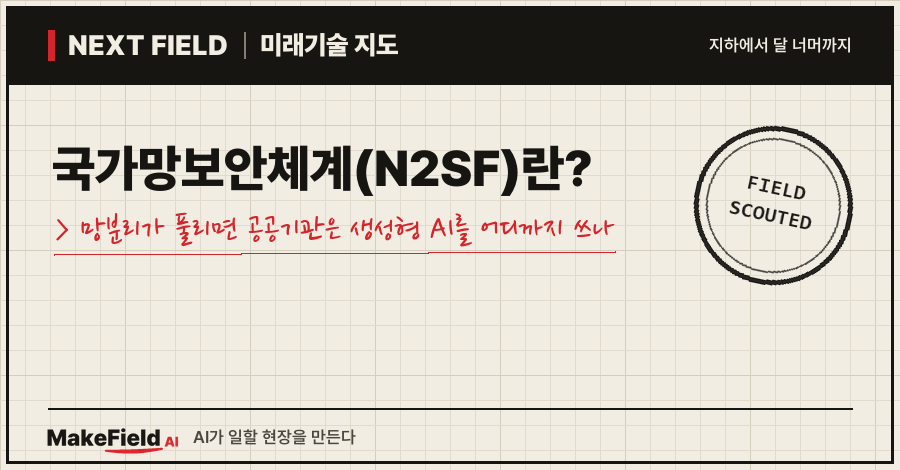
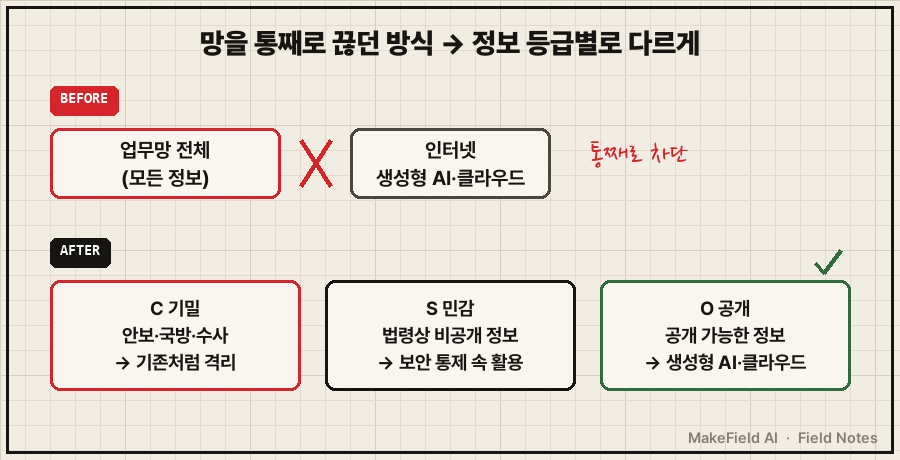
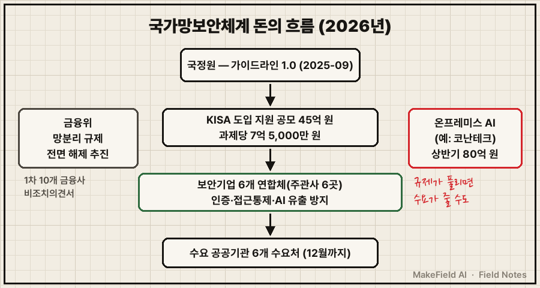
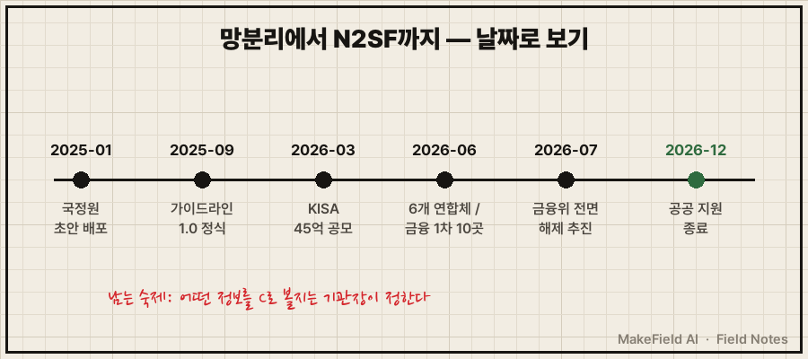

한 줄 요약: 국가망보안체계(N2SF)는 공공기관 업무망을 인터넷과 통째로 끊던 '망분리'를 버리고, 정보를 기밀(C)·민감(S)·공개(O) 세 등급으로 나눠 등급마다 보안을 다르게 거는 새 규칙이에요. 공개 등급(O) 정보는 생성형 AI와 클라우드를 쓸 수 있게 되고, 2026년 한국인터넷진흥원(KISA)은 45억 원을 들여 공공기관 6개 수요처의 도입을 돕고 있습니다(뉴시스·바이라인네트워크, 2026).
"공무원도 이제 챗GPT를 쓴다는데, 보안은 어떻게 하지?" 싶은 분, 그리고 규제가 바뀔 때 어느 회사에 일감이 생기는지 궁금한 분을 위한 글이에요. 2026년 11월 기준 공개 보도로 정리했습니다.
1. 국가망보안체계(N2SF)란 무엇인가요
국가망보안체계란 국가정보원이 만든 공공 보안 규칙으로, 모든 업무 정보를 똑같이 격리하던 방식을 정보의 중요도에 따라 다르게 지키는 방식으로 바꾼 것이다. 지디넷코리아는 이 전환을 "18년 만에 바뀐 국가망보안체계"라고 표현했어요(지디넷코리아, 2025-01).
💡 망분리 — 업무용 컴퓨터망을 인터넷과 물리적으로 끊어 두는 한국식 보안 규제. 업무 PC에서는 인터넷이 안 되고, 인터넷용 PC를 따로 쓰는 식이다.
💡 N2SF(National Network Security Framework) — '국가망보안체계'의 영문 약자. 기사에서는 N²SF로도 쓴다.
비유하면 기존 망분리는 도시 전체를 성벽으로 두르는 방식이었어요. 성벽 안에 들어온 사람은 아군으로 보고 넓은 권한을 줬습니다(바이라인네트워크, 2026-01). N2SF는 성벽 대신 건물마다 다른 잠금장치를 다는 쪽에 가깝습니다.
| 등급 | 어떤 정보 | 다루는 방식 |
|---|---|---|
| C(기밀, Classified) | 안보·국방·외교·수사 등 기밀 정보 | 기존처럼 엄격하게 격리 |
| S(민감, Sensitive) | 법령에 따른 비공개 정보, 유출 시 개인·국가에 피해 | 보안 통제 속에서 활용 |
| O(공개, Open) | 기밀·민감을 뺀, 공개 가능한 정보 | 생성형 AI·클라우드 활용 가능 |
(출처: 디지털데일리 2025-01-23, 뉴시스 2026-03-15)

그림을 글로 옮기면, 예전에는 업무망 전체가 인터넷과 끊겨 있었고, 이제는 같은 기관 안에서도 C는 격리·S는 통제·O는 생성형 AI 허용으로 나뉜다는 뜻이에요.
적용은 ▲준비 ▲C·S·O 등급분류 ▲위협식별 ▲보안대책 수립 ▲적절성 평가·조정의 5단계로 진행되고, 등급 분류는 각 기관의 장이 맡습니다(지디넷코리아, 2025-01).
2. 왜 지금 바뀌나요 — 생성형 AI 수요와 경영평가
규칙이 바뀌는 직접적 이유는 공공기관도 생성형 AI를 쓰고 싶어 하는데, 망분리 아래서는 쓸 길이 없었기 때문이다.
KISA가 2025년에 신규 정부시스템 2개와 기존 국가·공공 시스템 4개를 대상으로 시범 적용(실증)을 해 보니 "생성형 AI 활용 모델에 대한 수요가 특히 많았다"고 해요. 이 모델에는 외부 AI 서비스 접근 통제와 AI 데이터유출방지(AI-DLP) 기술을 붙였습니다(바이라인네트워크, 2026-03-16).
💡 AI-DLP(데이터유출방지) — 직원이 AI 서비스에 입력하는 내용을 검사해, 개인정보·비공개 자료가 밖으로 나가는 것을 막는 보안 기술.
💡 실증 — 실제 현장에 시범으로 적용해 효과와 문제를 확인하는 단계.
일정도 빨라졌어요. 국정원은 2025년 1월 각급 기관에 가이드라인 초안을 배포했고(디지털데일리, 2025-01-23), 2025년 9월 'N²SF 가이드라인 1.0'을 정식 발표했습니다. 압박 수단도 붙었어요. 공공기관 경영평가의 보안 배점이 0.25점에서 0.6점으로 올라갔고, N2SF가 주요 평가 지표로 활용될 예정이라는 보도가 나왔습니다(바이라인네트워크, 2026-01).
💡 경영평가 — 정부가 공공기관의 한 해 운영을 점수로 매기는 제도. 점수가 기관 성과급과 연결돼 기관들이 민감하게 반응한다.

그림을 글로 옮기면, 초안(2025-01)에서 정식 가이드라인(2025-09), 예산 공모(2026-03), 공공·금융 시범(2026-06), 금융권 전면 해제 추진(2026-07)까지 2년이 채 안 걸렸다는 흐름이에요.
3. 돈의 흐름 — 누가 내고, 누가 받나요
국가망보안체계의 첫 돈은 정부(KISA)가 내고, 보안기업 연합체가 받아 공공기관에 인증·접근통제·AI 유출 방지 체계를 깔아 주는 구조다.
- 얼마: 2026년 도입 지원 공모는 과제당 7억 5,000만 원, 총 45억 원 규모예요. 아직 시험해 보지 않은 모델 검증에도 약 9억 9,000만 원을 따로 씁니다(바이라인네트워크, 2026-03-16).
- 누구에게: KISA는 6개 연합체를 뽑았고, 선정된 보안기업들은 12월까지 약 7개월 동안 수요기관의 도입을 지원해요(바이라인네트워크, 2026-06-17).
- 무엇을: 한 참여 기업은 통합계정관리(ICAM) 기반 사용자 인증·단말 관리와 SSO 연계 접근통제를 구현한다고 밝혔습니다(디지털데일리, 2026-07-13).
💡 ICAM(통합계정관리) — 누가, 어떤 기기로, 어떤 자료에 접근하는지를 한곳에서 관리하는 체계.
💡 SSO(통합 로그인) — 한 번 로그인하면 여러 시스템을 다시 로그인 없이 쓰게 하는 방식.
💡 컨소시엄(연합체) — 여러 회사가 한 과제를 같이 따내려고 묶은 팀.
아래 기업명은 산업 구조를 설명하기 위한 예시이며 투자 판단과 무관합니다.
| 수요기관 | 주관 보안기업(예시) |
|---|---|
| 기후에너지환경부·한전KDN | 프라이빗테크놀로지 |
| 성평등가족부 | 윈스테크넷 |
| 우정사업본부 | 이노티움 |
| 한국도로공사 | 이니텍 |
| 한국부동산원 | 휴네시온 |
| 한국연구재단 | 안랩 |
(출처: 바이라인네트워크, 2026-06-17)
금융권에서도 같은 방향의 돈길이 열립니다. 금융위원회는 2026년 6월 17일 보안 목적으로 생성형 AI를 쓰려는 1차 대상 10개 금융사를 뽑아 비조치의견서를 주기로 했고, 명단은 보안상 공개하지 않았어요(MTN, 2026-06-18). 이어 7월 15일 하반기 업무보고에서 망분리 규제를 전면 해제하고 디지털금융안전법 제정을 추진하겠다고 밝혔습니다. 이 법은 해킹 사고 때 금융회사와 외부 IT업체의 책임을 나누는 내용이에요(디지털데일리, 2026-07-15).
💡 비조치의견서 — "이렇게 해도 제재하지 않겠다"고 금융당국이 미리 써 주는 확인서. 규제를 고치기 전 시범 허용에 쓴다.

그림을 글로 옮기면, 정부 예산이 보안기업 연합체를 거쳐 공공기관으로 흐르고, 옆에서는 금융권 규제가 풀리며, 반대편에서는 '밖으로 못 보내니 사내에 AI를 설치하던' 시장이 영향을 받는 구도예요.
4. 누가 손해를 볼 수 있나요 — 온프레미스 AI의 고민
망분리 완화는 보안기업에는 일감이지만, '자료를 밖으로 못 보내니 사내 서버에 AI를 설치한다'는 수요에는 역풍이 될 수 있다.
💡 온프레미스 — 클라우드가 아니라 기관·회사 건물 안 서버에 직접 설치해 쓰는 방식.
국내 대표 온프레미스 AI 업체 코난테크놀로지는 2026년 1분기 별도 매출 38억 7,578만 원 가운데 자체 LLM 매출이 16억 원(41.3%)이었고, 서버 일체형 LLM 서비스를 본격화한다고 밝혔어요(디지털데일리, 2026-05-17). 상반기 매출은 80억 4,739만 원으로 7.9% 늘었지만 영업손실 68억 원을 냈습니다(바이라인네트워크, 2026-08-18).
💡 LLM(대형 언어 모델) — 챗GPT처럼 사람 말을 알아듣고 글을 쓰는 AI의 본체.
O등급 정보를 외부 생성형 AI로 처리할 수 있게 되면, 사내 설치형 AI가 꼭 필요한 영역은 C등급처럼 끝까지 격리가 남는 쪽으로 좁아질 수 있어요. 다만 이는 공개 자료를 종합한 추정이고, 실제 수요 변화를 보여 주는 통계는 아직 나오지 않았습니다.
5. 언제 오나요, 한계는 없나요
공공 지원사업은 2026년 12월까지 6개 연합체·수요처에서 진행되고, 금융권은 단계적으로 대상을 늘리는 중이라 '전 기관 적용'은 아직 먼 이야기다.
| 구분 | 확인된 것 | 아직 불확실한 것 |
|---|---|---|
| 규칙 | 가이드라인 1.0(2025-09), C·S·O 3등급, 5단계 적용 | 기관마다 무엇을 C·S로 볼지 |
| 공공 예산 | 2026년 45억 원, 6개 연합체, 12월까지 | 2027년 이후 예산·확산 속도 |
| 금융 | 1차 10개사 비조치(2026-06), 전면 해제 추진(2026-07) | 디지털금융안전법 확정 시점 |
| 시장 | 보안기업 연합체 일감, 온프레미스 업체 실적 공개 | 망분리 완화가 온프레미스 수요를 얼마나 줄일지 |
가장 큰 한계는 등급 분류가 기관장 몫이라는 점이에요. 같은 문서를 어느 기관은 S로, 어느 기관은 O로 볼 수 있습니다. 기존 망분리용 보안 제품도 검증 유효기간까지는 효력이 인정돼(지디넷코리아, 2025-01) 현장의 장비가 한 번에 바뀌지는 않아요. 금융권도 1차 10곳을 '실험대'로 삼아 보안 위협을 먼저 검증한 뒤 2차 대상을 받는 단계적 방식입니다(MTN, 2026-06-18).
자주 묻는 질문
Q1. N2SF가 시행되면 공무원이 업무 PC에서 챗GPT를 바로 쓸 수 있나요?
공개(O) 등급 정보를 다루는 업무에 한해 생성형 AI·클라우드 활용 길이 열려요. 기밀(C) 정보는 기존처럼 격리되고, 실제 허용 범위는 기관이 등급을 나누고 보안대책을 세운 뒤에 정해집니다.
Q2. 망분리가 완전히 없어지는 건가요?
아니요. 기밀(C) 등급에는 격리가 그대로 남아요. 바뀌는 것은 '모든 정보를 똑같이 끊던 방식'이고, 끊는 범위가 정보 등급에 따라 달라집니다.
Q3. 금융권 망분리 완화와 N2SF는 같은 제도인가요?
다른 제도예요. N2SF는 국정원이 만든 공공기관용 체계이고, 금융권 완화는 금융위원회가 비조치의견서와 디지털금융안전법 추진으로 따로 진행합니다. 방향은 둘 다 'AI·클라우드 활용 문턱을 낮추되 사고 책임은 엄격히'로 같아요.
오늘의 용어 정리
| 용어 | 쉬운 말 |
|---|---|
| 국가망보안체계(N2SF) | 정보를 C·S·O 등급으로 나눠 보안을 다르게 거는 국정원의 공공 보안 체계 |
| 망분리 | 업무망을 인터넷과 물리적으로 끊는 한국식 보안 규제 |
| C·S·O | 기밀·민감·공개 세 정보 등급 |
| 실증 | 실제 현장에 시범 적용해 확인하는 단계 |
| AI-DLP | AI에 입력하는 자료의 유출을 막는 기술 |
| 경영평가 | 정부가 공공기관 운영을 점수로 매기는 제도 |
| ICAM | 누가 어떤 기기로 어디에 접근하는지 한곳에서 관리하는 체계 |
| SSO | 한 번 로그인으로 여러 시스템을 쓰는 방식 |
| 컨소시엄 | 한 과제를 같이 따내려고 묶은 회사 연합 |
| 비조치의견서 | 금융당국이 "제재하지 않겠다"고 미리 써 주는 확인서 |
| 온프레미스 | 건물 안 서버에 직접 설치해 쓰는 방식 |
| LLM | 사람 말을 알아듣고 글을 쓰는 대형 AI 모델 |
지난 Next Field 엣지 AI 칩 글에서 비싸진 AI 장비 값을 짚었다면, 오늘은 그런 장비를 '사내에 꼭 둬야 하는 이유'였던 규제가 풀리는 이야기였어요. 성벽이 낮아질수록 돈은 성벽을 쌓던 쪽에서 '누가 무엇을 볼 수 있는지 관리하는' 쪽으로 옮겨 가는 모습입니다. 다음 Next Field에서는 또 다른 미래 현장의 돈 흐름을 쉬운 말로 풀어 볼게요.
여러분이 일하는 곳에서는 업무 PC로 생성형 AI를 쓸 수 있나요?
MakeField AI는 어렵고 낯선 산업 기술을 쉬운 말로 풀어 정리합니다 → https://makefield.ai
출처
[1] 뉴시스(2026-03-15) — KISA 45억 원 N2SF 도입 지원 공모, C·S·O 등급별 처리 방식, 공공기관 업무망 생성형 AI·클라우드 활용
→ https://mobile.newsis.com/view/NISX20260313_0003547805
[2] 바이라인네트워크(2026-03-16) — 2025년 실증(신규 정부시스템 2개·기존 시스템 4개), 생성형 AI 활용 모델 수요, AI-DLP 적용, 과제당 7억 5,000만 원·총 45억 원, 미실증 모델 검증 약 9억 9,000만 원
→ https://byline.network/2026/03/16-630/
[3] 바이라인네트워크(2026-06-17) — KISA 6개 연합체 선정, 수요기관별 주관·참여 보안기업, 12월까지 약 7개월 지원
→ https://byline.network/2026/06/17-575/
[4] 바이라인네트워크(2026-01) — 가이드라인 1.0 정식 발표(2025-09), 기존 망분리를 성벽에 빗댄 설명, 경영평가 보안 배점 0.25점→0.6점
→ https://byline.network/2026/01/12-522/
[5] 디지털데일리(2025-01-23) — 국정원 가이드라인 초안 각급 기관 배포, C·S·O 정의
→ https://www.ddaily.co.kr/page/view/2025012316455942967
[6] 지디넷코리아(2025-01) — '18년 만에 바뀐 국가망보안체계', 5단계 적용 절차, 등급 분류는 기관장 몫, 기존 검증 제품 유효기간까지 효력
→ https://zdnet.co.kr/view/?no=20250124164856
[7] 디지털데일리(2026-07-13) — 참여 보안기업의 ICAM 기반 인증·단말 관리, SSO 연계 접근통제 구현
→ https://www.ddaily.co.kr/page/view/2026071314532255205
[8] MTN(2026-06-18) — 금융위 보안 목적 생성형 AI 1차 10개 금융사 선정·비조치의견서, 명단 비공개, 8월 2차 신청 계획, '실험대' 취지
→ https://news.mtn.co.kr/news-detail/2026061813415179539
[9] 디지털데일리(2026-07-15) — 금융위 하반기 업무보고, 망분리 규제 전면 해제·디지털금융안전법 제정 추진, 사고 책임 구분
→ https://www.ddaily.co.kr/page/view/2026071517443276094
[10] 디지털데일리(2026-05-17) — 코난테크놀로지 1분기 별도 매출 38억 7,578만 원, 자체 LLM 매출 16억 원(41.3%), 서버 일체형 LLM 본격화
→ https://www.ddaily.co.kr/page/view/2026051523423016377
[11] 바이라인네트워크(2026-08-18) — 코난테크놀로지 상반기 매출 80억 4,739만 원(+7.9%), 영업손실 68억 원
→ https://byline.network/2026/08/18-610/